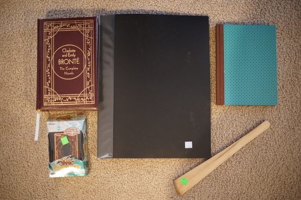
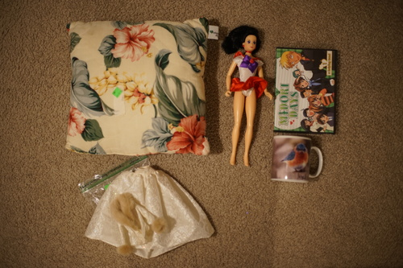

back in december (specifically the 12th) I ordered some stuff on rightstuf and they charged me immediately despite one of the items being out of stock. finally as of last week, all the items are back in stock but my order didn't ship until 2/23. i'm not super impressed and i wont be ordering from them again. i get the shipping situation sucks but i was not warned it would be over 2 months of them holding my money. they never once initiated contact to keep me updated on the delay. the only reason i know it was an international shipment delay was because i asked in mid january.
the most annoying thing about rightstuf is their email newsletter. i had it enabled for a few days hoping i would get a free shipping code. i did get one... about 10 minutes after i submitted my order. this newsletter is just "TIME IS RUNNING OUT! BUY NOW" over and over every day. one day, I got THREE newsletter emails. it could not possibly be more annoying! even the joanns promo emails arent this bad
anyway i ordered gosick LN vol 1, gosick complete BD, and rozen maiden zurueckspulen BD. all on sale ofc. it ended up being less than $50 even with shipping. thanks to pompon i fell in love with gosick and zurueckspulen was actually the first rozen maiden i watched. id love to own the dvds for the rest but i havent gotten around to searching them out. a rerelease on BD would be nice (hint hint)
season 1 of szs is up for preorder! very exciting to see that series getting an official english release. i hope they translate the whole thing.
i ordered 3 copies of volks news from 2008 for $3 each during volksusa's free shipping (on volksnews) sale. they've been really fun to look through and i think i should just start ordering them as they come out. i dont have a great job but i can handle $20 a year. i also ordered a copy of Aimee's Japan Ai: A Tall Girl's Adventures in Japan. i looked at it (in like 2007) in a barnes and noble but it was just too american weeb for me. this woman's site has made such a positive impact in my life that i do want a copy now. i'll let you know if it's worth the $4.50 i paid.

I measured my himawari yukata and scaled it down for hina's size. I put one together for her and decided to go with some furisode sleeves (which you would not see on a yukata!!). there's a few parts that are machine sewn, but I hated the look of the stitches so I did blind hem stitches for anything visible. it took just about forever. it took me like 4 movies to get through this d*ng thing. i made it through minions, diary of a wimpy kid, and both blade runners.
i've made 5 different kimonos so far of varying accuracy. this one is really the closest ive gotten i think. i made some padding but her kitsuke is still not great. ill keep working at it.
as a sidenote, i bought the ruffle boots she's wearing for sochi back in the day. they were sold as MSD size but clearly.... anyway the heel is falling off and the pleather is cracking. it hurts my heart to see all the money i spent on shoes just disintegrate
I'm thinking about making a page of patterns ive made but it really would be a ton of effort to upload it. I dont have a scanner but maybe ill feel inclined to scan everything next time i'm at my mom's house. I could in theory use a library scanner but it still feels like the world is locked down. the kimono/yukata pattern is all blocks so I don't need to scan it. I don't mind sharing at all. i dont need or want to make money off this sort of thing.
my sewing machine just feels like it's struggling to even sew a straight line now. I'm not nervous to open it up and mess around but i dont feel like I have any idea how it works so i wont be able to fix it.
today we went downtown because there was a craft fair. I walked in and a Mary Kay woman attacked me, then a MLM bra seller tried to half ass talking to me, and there was also a scentsy woman sitting in the corner quietly, just saying hi. This is seriously a craft fair these days?? Just MLM sellers?? i couldnt be more disappointed. we stopped by the book store and the thrift store while we were out though.
Ryan's.
its sealed. but for how long?
I went to the thrift store last friday too (surprise surprise) i was too busy handsewing to post it.
i hope this will make sitting at my floor desk a little comfier
what was bandai thinking?! shes hideous!
the cashier said "oh! green days!" and i knew i was hecked
whoever owned this bothered to put the doll number and release date. why'd they donate it if they cared about it? its missing the hat. i'll find a doll to put it on. unfortunately it does not fit on sailor mars
stupidly cute